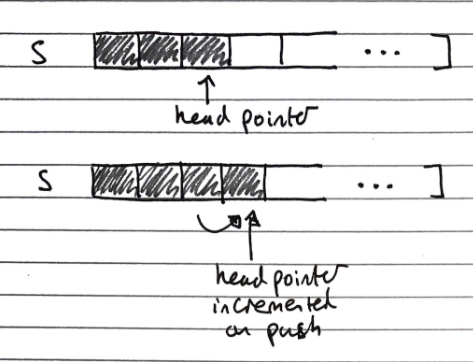
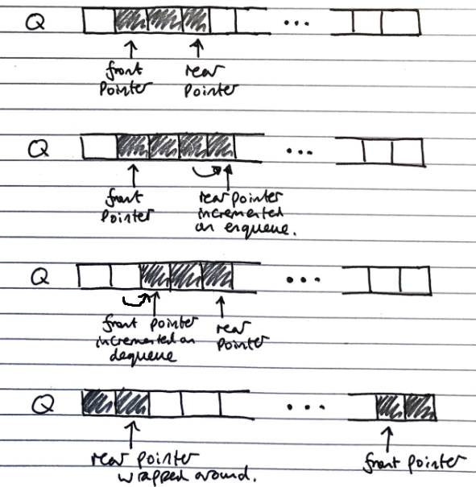

Stacks (ADT)
Stacks are a “Last in, first out” (LIFO) data structure, with both insertions and deletions always occurring at the front of the stack.
These insertions and deletions are the fundamental operations of the stack, called pushing and popping respectively.
There is an edge case of popping from an empty stack, which normally either returns null or throws an error
Stacks have the fundamental operations:
| Fundamental operation | Value returned | Effect |
|---|---|---|
push(e) |
Add the value e to the top of the stack |
- |
pop() |
The most recently pushed item from the top of the stack | Remove the most recently pushed item from the top of the stack |
size() |
The size of the stack | - |
isEmpty() |
Whether the stack is empty | - |
Array Based Implementation
Index of head stored, and incremented/decremented on pushing/popping operations
-
O(n) space complexity
-
O(1) time complexity of fundamental operations

Queues (ADT)
Queues are a “First in, first out” (FIFO) data structure, with insertions occurring at the rear and removals at the front of the queue.
These insertions and deletions are the fundamental operations of the stack, called enqueueing and dequeuing respectively.
There is an edge case of dequeuing from an empty queue, normally either returns null or throws an error
Queues have the fundamental operations
| Fundamental operation | Value returned | Effect |
|---|---|---|
enqueue(e) |
Add the value e to the tail of the queue |
- |
dequeue() |
The least recently enqueued item from the head of the queue | Remove the least recently enqueued item from the head of the queue |
size() |
The size of the queue | - |
isEmpty() |
Whether the queue is empty | - |
Array Based Implementation
Uses and array with data wrapping (so like using an array in a Queue class with extra fields/properties) around as it is added and removed. Both the index of the head f and the size of the queue s need to be stored.
The rear of the queue (index to insert to next) is (f + s) mod N, with N as the array size

- O(n) space complexity
- O(1) time complexity of fundamental operations